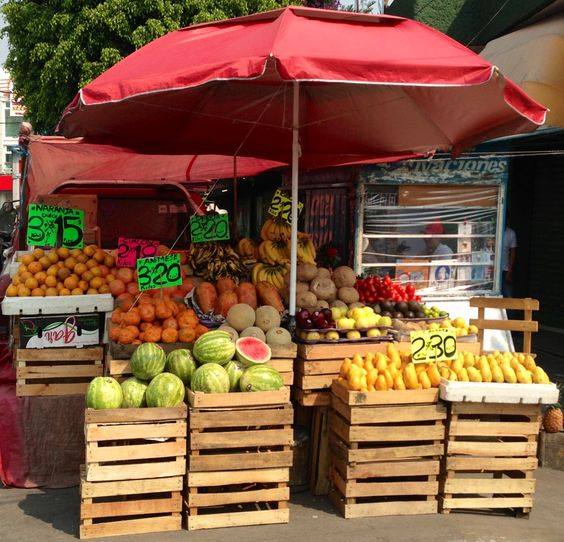
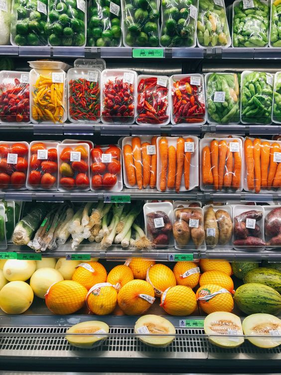
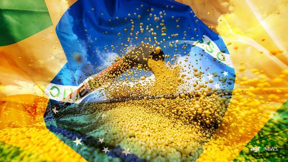

FEIRA DO PRODUTOR_
O QUE É?
São barracas que vendem produtos produzidos no sistema de agricultura familiar.
O QUE TEM?
Oferece frutas, verduras e legumes - fresquinhos e de qualidade - diretamente do produtor em um ambiente agradável para toda a família e com horário perfeito.
QUANDO FOI CRIADO?
Criada há mais de 30 anos, na gestão do ex-prefeito Frederico Leuck 1983/1988.
FOTO